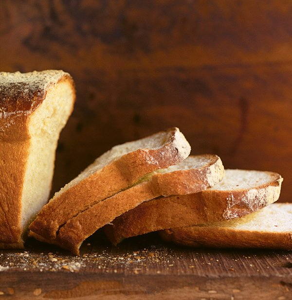

About the recipe
While the everyday bread on my table is generally Jim Lahey's round,
crackle-crusted Basic No-Knead Bread or some variant thereof, there are times
when I just want a slice of old-school, tender-crumbed bread, and this Old-Fashioned
Sandwich Loaf exactly fits the bill. As its name suggests, it is perfect for sandwiches —
be they bacon, sausage, egg, fish finger — and the bread I always use for my Fried Chicken
Sandwich if a good burger bun is not to be found. It also just happens to make the most wonderful toast.
It is my reworking of Dan Lepard's Sour Cream Sandwich Bread, only I use spoilt milk instead of sour cream,
adding butter to make up the fat, but quantities are given for either version below. And should you need it
to be vegan, simply replace the spoilt milk with plant-based yogurt and the butter with vegetable fat, and
reduce the salt and sugar to 1 teaspoon each. Whichever way you make it, it is a triumph, and bafflingly easy:
the most stringent demand on you, in the course of making it, is that you knead it 3 times for 10 seconds at
10-minute intervals. What are you waiting for?
Ingredients
Makes:1 beautiful loaf
- 500 grams strong white bread flour plus more for dusting
- 2½ teaspoons (7g) or 1 x 7g/¼oz sachet fast-action dried yeast
- 2 teaspoons (8g) caster sugar
- 2 teaspoons (12g) fine sea salt
- 125 ml spoilt milk (or sour cream) straight from the fridge
- 150 ml cold water
- 100 ml hot water from a just-boiled kettle
- 3 x 15ml tablespoons (45g) soft unsalted butter (omit if using sour cream, plus more for greasing tin)
- Vegetable oil for kneading
Method
You will need a 2lb/900g loaf tin — dimensions vary, but as a guide, mine has internal measurements
of 24 x 12 x 8cm / 9.5 x 5 x 3in.
- Mix the flour, yeast, sugar and salt in a large bowl.
-
Pour the spoilt milk (or sour cream) into a measuring jug, add the cold water
(which will take you to the 275ml / 1½ cups mark) then the boiling water
(and I'm presuming you don't need me to say that it should now read 375ml).
Stir the soft butter into the jug; it won't melt entirely, but that's fine.
- Pour the jug of wet ingredients into the bowl of dry ingredients, stirring as you go,
either with a wooden spoon, a Danish dough whisk or — and these are my tools of choice here — hands.
Stir until all the flour — apart from a little that's clinging to the sides of the bowl — is absorbed
into the dough; if this takes a minute I'd be surprised. Form into a rough ball, cover the bowl with
food wrap or a shower cap, and leave for 10 minutes.
-
Pour a little oil onto the kitchen counter and spread it with your hand to give a light sheen to an area
big enough to knead on. Take the dough out of its bowl and duly knead it for 10 seconds. How you knead is
very personal: we all have our different styles; I push the dough away with the heel of my hand and bring
it back with my fingers. Form the dough back into a ball, return it to its bowl, cover it again, and leave
for 10 minutes. Repeat this process twice, and after the third 10-second knead, form the dough into a ball
again, put it back in the bowl, cover, and leave for an hour.
-
Line the bottom of a 2lb/900g loaf tin and very lightly grease the sides; I use an old butter wrapper for this.
Take the plumptiously risen dough out of its bowl, and pat it out on your oiled surface so that you have a soft,
puffy mattress about 2cm thick, with one edge about 4cm shorter than the length of your tin. Starting with this
edge, and using both hands, tightly roll the dough into a scroll — or swiss roll, if that helps you visualise it
better — and tenderly place it seam side down in your prepared tin; you may have to press the short sides gently
to fit it in, as the scroll can get longer as you roll. Leave to rise for 1-1½ hours, until it's peeking out just
above the top of the tin. Turn the oven on when it looks like it's nearly there.
-
So, heat the oven to 200℃/180℃ Fan/400°F. Dust the top of the dough with flour and bake for 45 minutes,
by which time the bread will be risen, with a rounded and deep biscuity-gold top. Unless your oven is misfiring,
it will definitely be done. Armed with oven gloves, quickly take the bread out of the tin, and place it on a wire
rack to cool before slicing into it. To keep the loaf fresh for as long as possible, store in a bread bin.
The next best method is to wrap it in a tea towel.
Back to Top